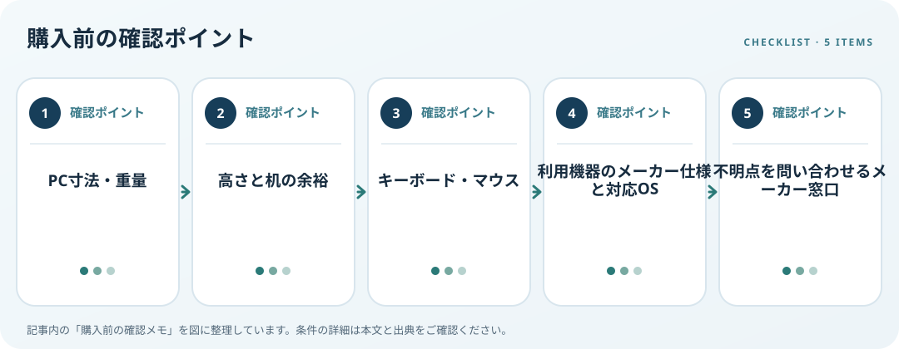

ノートPCスタンドは高さ調整幅だけでなく、PCの寸法・重量、机の余裕、キーボードやマウスの場所を合わせて選びます。OSHAのワークステーション評価資料は、主に使うノートPCには別体キーボードと入力機器を用意する考え方を示しています。スタンドだけで作業環境が整うとは考えず、机全体を確認しましょう。

対応条件を仕様で確認
PCの幅・奥行き・重量を調べ、スタンドの対応サイズ、許容荷重、受け部分の寸法を照合します。滑り止め、前面ストッパー、ヒンジ調整、折りたたみ時の寸法も確認します。対応上限に近いPCを置く場合は、使用時の安定性やメーカー注意事項を読んでください。
利用環境・設置条件を確認
画面を持ち上げると内蔵キーボードとタッチパッドも高くなるため、長時間入力するなら外付け機器を置く空間が必要です。机の幅・奥行き、希望する角度、持ち運びの有無、脚の開き幅を購入前に測ります。ファン付きスタンドは吸排気口との位置を確認し、冷却効果を根拠なく前提にしないようにします。
購入前の確認メモ
- PC寸法・重量
- 高さと机の余裕
- キーボード・マウス
- 利用機器のメーカー仕様と対応OS
- 不明点を問い合わせるメーカー窓口
記事は出典の公開情報を確認手順に整理したもので、製品の使用・実測・ランキング・価格・在庫の調査は行っていません。購入時には各メーカーの最新情報をご確認ください。
出典
- Computer Workstations: Evaluation Checklist — OSHA（確認日: 2026-10-10）
- Computer Workstations: Good Working Positions — OSHA（確認日: 2026-10-10）